Computer Vision Using Go and OpenCV 3
Ron Evans - @deadprogram
Welcome

Ron Evans (@deadprogram)
hybridgroup.com
Clients
Open Source Projects
gobot.io

gocv.io
opencv.org
golang.org
Intel OpenVINO
What is computer vision?
Computer vision can...
Detect motion
Recognize people
Telepresence
Autonomous Vehicles
Augmented Humans
Why you should use Go
for computer vision
Concurrency
Portability
Performance
How GoCV Works
Go → CGo → C → C++
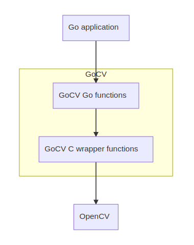
Linux
mac os
Windows
Yes, I said Windows
The "Hello, world" of video
package main
import (
"gocv.io/x/gocv"
)
func main() {
webcam, _ := gocv.VideoCaptureDevice(0)
window := gocv.NewWindow("Hello")
img := gocv.NewMat()
for {
webcam.Read(&img)
window.IMShow(img)
gocv.WaitKey(1)
}
}
Demo
Into The Mat(rix)
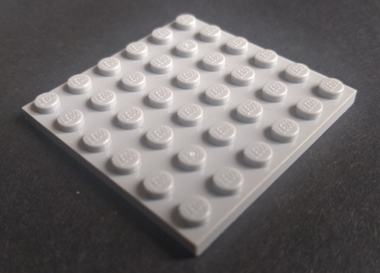
Empty Mat
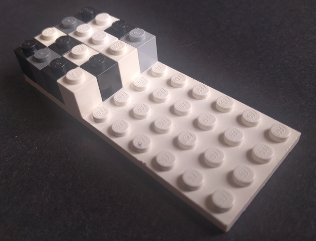
Grayscale image
Mat (2 dimensions, 16-bit integer)
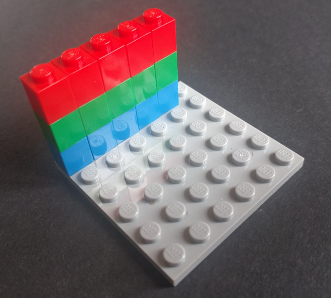
RGB Color image
Mat (2 dimensions, 16-bit integer, 3 channels)
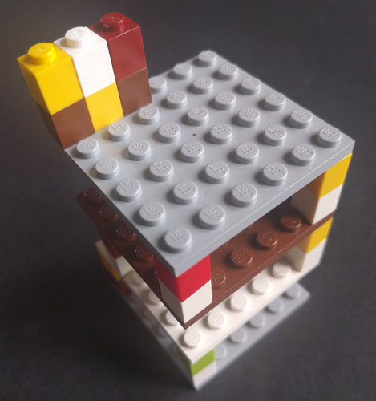
3-d vector
Mat (3 dimensions, floating point, 2 channels)
4 Applications Using GoCV
Face tracking
Face tracking
Face blurring
Cascade classifier
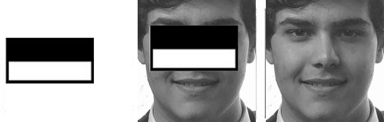
haar feature applied to eyes
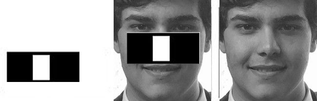
haar feature applied to nose
gocv.CascadeClassifier{}
package main
import (
"fmt"
"image"
"os"
"strconv"
"gocv.io/x/gocv"
)
func main() {
if len(os.Args) < 3 {
fmt.Println("How to run:\n\tfaceblur [camera ID] [classifier XML file]")
return
}
// parse args
deviceID, _ := strconv.Atoi(os.Args[1])
xmlFile := os.Args[2]
// open webcam
webcam, err := gocv.VideoCaptureDevice(deviceID)
if err != nil {
fmt.Printf("error opening video capture device: %v\n", deviceID)
return
}
defer webcam.Close()
// open display window
window := gocv.NewWindow("Face Blur")
defer window.Close()
// prepare image matrix
img := gocv.NewMat()
defer img.Close()
// load classifier to recognize faces
classifier := gocv.NewCascadeClassifier()
defer classifier.Close()
classifier.Load(xmlFile)
fmt.Printf("start reading camera device: %v\n", deviceID)
for {
if ok := webcam.Read(&img); !ok {
fmt.Printf("cannot read device %d\n", deviceID)
return
}
if img.Empty() {
continue
}
// detect faces
rects := classifier.DetectMultiScale(img)
fmt.Printf("found %d faces\n", len(rects))
// blur each face on the original image
for _, r := range rects {
imgFace := img.Region(r)
// blur face
gocv.GaussianBlur(imgFace, &imgFace, image.Pt(75, 75), 0, 0, gocv.BorderDefault)
imgFace.Close()
}
// show the image in the window, and wait 1 millisecond
window.IMShow(img)
if window.WaitKey(1) >= 0 {
break
}
}
}
Demo
Motion Detection/Tracking
Background Subtraction
Mixture Of Gaussian (MOG)
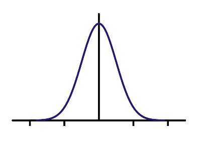
Gaussian
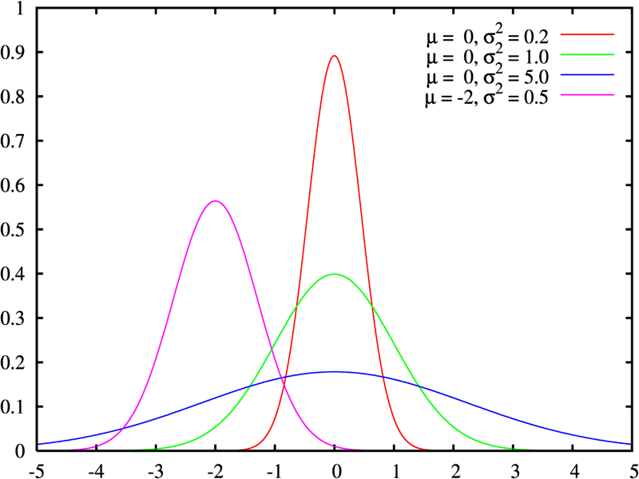
Mixture Of Gaussian
CC BY-SA 3.0, https://commons.wikimedia.org/w/index.php?curid=84811
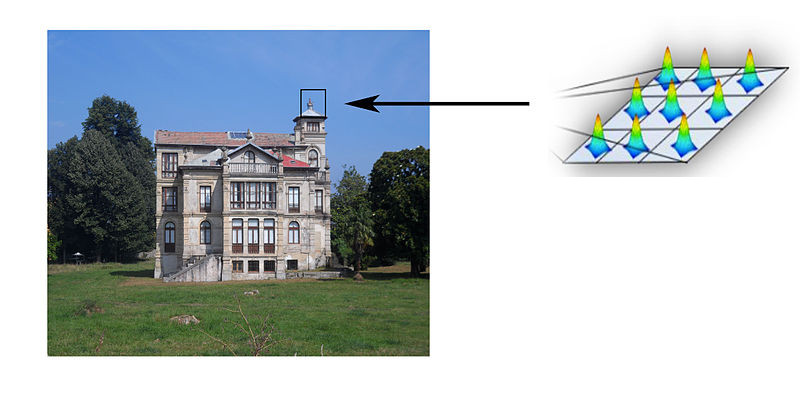
Running Mixture Of Gaussian
CC BY-SA 3.0, https://commons.wikimedia.org/wiki/File:Running_gaussian.jpg
gocv.BackgroundSubtractorMOG2{}
package main
import (
"fmt"
"image"
"image/color"
"os"
"strconv"
"gocv.io/x/gocv"
)
const MinimumArea = 3000
func main() {
if len(os.Args) < 2 {
fmt.Println("How to run:\n\tmotion-detect [camera ID]")
return
}
// parse args
deviceID, _ := strconv.Atoi(os.Args[1])
webcam, err := gocv.VideoCaptureDevice(int(deviceID))
if err != nil {
fmt.Printf("Error opening video capture device: %v\n", deviceID)
return
}
defer webcam.Close()
window := gocv.NewWindow("Motion Window")
defer window.Close()
img := gocv.NewMat()
defer img.Close()
imgDelta := gocv.NewMat()
defer imgDelta.Close()
imgThresh := gocv.NewMat()
defer imgThresh.Close()
mog2 := gocv.NewBackgroundSubtractorMOG2()
defer mog2.Close()
status := "Ready"
fmt.Printf("Start reading camera device: %v\n", deviceID)
for {
if ok := webcam.Read(&img); !ok {
fmt.Printf("Error cannot read device %d\n", deviceID)
return
}
if img.Empty() {
continue
}
status = "Ready"
statusColor := color.RGBA{0, 255, 0, 0}
// first phase of cleaning up image, obtain foreground only
mog2.Apply(img, &imgDelta)
// remaining cleanup of the image to use for finding contours.
// first use threshold
gocv.Threshold(imgDelta, &imgThresh, 25, 255, gocv.ThresholdBinary)
// then dilate
kernel := gocv.GetStructuringElement(gocv.MorphRect, image.Pt(3, 3))
defer kernel.Close()
gocv.Dilate(imgThresh, &imgThresh, kernel)
// now find contours
contours := gocv.FindContours(imgThresh, gocv.RetrievalExternal, gocv.ChainApproxSimple)
for i, c := range contours {
area := gocv.ContourArea(c)
if area < MinimumArea {
continue
}
status = "Motion detected"
statusColor = color.RGBA{255, 0, 0, 0}
gocv.DrawContours(&img, contours, i, statusColor, 2)
rect := gocv.BoundingRect(c)
gocv.Rectangle(&img, rect, color.RGBA{0, 0, 255, 0}, 2)
}
gocv.PutText(&img, status, image.Pt(10, 20), gocv.FontHersheyPlain, 1.2, statusColor, 2)
window.IMShow(img)
if window.WaitKey(1) == 27 {
break
}
}
}
Demo
MJPEG Streaming
MJPEG
package main
import (
"fmt"
"log"
"net/http"
"os"
"strconv"
"github.com/hybridgroup/mjpeg"
"gocv.io/x/gocv"
)
var (
deviceID int
err error
webcam *gocv.VideoCapture
stream *mjpeg.Stream
)
func main() {
if len(os.Args) < 3 {
fmt.Println("How to run:\n\tmjpeg-streamer [camera ID] [host:port]")
return
}
// parse args
deviceID, _ = strconv.Atoi(os.Args[1])
host := os.Args[2]
// open webcam
webcam, err = gocv.VideoCaptureDevice(deviceID)
if err != nil {
fmt.Printf("error opening video capture device: %v\n", deviceID)
return
}
defer webcam.Close()
// create the mjpeg stream
stream = mjpeg.NewStream()
// start capturing
go capture()
fmt.Println("Capturing. Point your browser to " + host)
// start http server
http.Handle("/", stream)
log.Fatal(http.ListenAndServe(host, nil))
}
func capture() {
img := gocv.NewMat()
defer img.Close()
for {
if ok := webcam.Read(&img); !ok {
fmt.Printf("cannot read device %d\n", deviceID)
return
}
if img.Empty() {
continue
}
buf, _ := gocv.IMEncode(".jpg", img)
stream.UpdateJPEG(buf)
}
}
Demo
Object Classification/Tracking
with a deep neural network
and a drone
DJI Tello
Caffe

Deep Neural Network
CC BY-SA 3.0, https://commons.wikimedia.org/w/index.php?curid=1496812
OpenCV face tracking SSD model

Single-shot Multibox Detector (SSD)
gocv.Net{}
package main
import (
"fmt"
"image"
"image/color"
"io"
"math"
"os"
"os/exec"
"strconv"
"sync/atomic"
"time"
"gobot.io/x/gobot"
"gobot.io/x/gobot/platforms/dji/tello"
"gobot.io/x/gobot/platforms/joystick"
"gocv.io/x/gocv"
)
type pair struct {
x float64
y float64
}
const (
frameX = 400
frameY = 300
frameSize = frameX * frameY * 3
offset = 32767.0
)
var (
// ffmpeg command to decode video stream from drone
ffmpeg = exec.Command("ffmpeg", "-hwaccel", "auto", "-hwaccel_device", "opencl", "-i", "pipe:0",
"-pix_fmt", "bgr24", "-s", strconv.Itoa(frameX)+"x"+strconv.Itoa(frameY), "-f", "rawvideo", "pipe:1")
ffmpegIn, _ = ffmpeg.StdinPipe()
ffmpegOut, _ = ffmpeg.StdoutPipe()
// gocv
window = gocv.NewWindow("Tello")
net *gocv.Net
green = color.RGBA{0, 255, 0, 0}
// tracking
tracking = false
detected = false
detectSize = false
distTolerance = 0.05 * dist(0, 0, frameX, frameY)
refDistance float64
left, top, right, bottom float64
// drone
drone = tello.NewDriver("8890")
flightData *tello.FlightData
// joystick
joyAdaptor = joystick.NewAdaptor()
stick = joystick.NewDriver(joyAdaptor, "dualshock4")
leftX, leftY, rightX, rightY atomic.Value
)
func init() {
leftX.Store(float64(0.0))
leftY.Store(float64(0.0))
rightX.Store(float64(0.0))
rightY.Store(float64(0.0))
// process drone events in separate goroutine for concurrency
go func() {
// process joystick events
handleJoystick()
if err := ffmpeg.Start(); err != nil {
fmt.Println(err)
return
}
drone.On(tello.FlightDataEvent, func(data interface{}) {
// TODO: protect flight data from race condition
flightData = data.(*tello.FlightData)
})
drone.On(tello.ConnectedEvent, func(data interface{}) {
fmt.Println("Connected")
drone.StartVideo()
drone.SetVideoEncoderRate(tello.VideoBitRateAuto)
drone.SetExposure(0)
gobot.Every(100*time.Millisecond, func() {
drone.StartVideo()
})
})
drone.On(tello.VideoFrameEvent, func(data interface{}) {
pkt := data.([]byte)
if _, err := ffmpegIn.Write(pkt); err != nil {
fmt.Println(err)
}
})
robot := gobot.NewRobot("tello",
[]gobot.Connection{joyAdaptor},
[]gobot.Device{drone, stick},
)
robot.Start()
}()
}
func main() {
if len(os.Args) < 5 {
fmt.Println("How to run:\ngo run facetracker.go [model] [config] ([backend] [device])")
return
}
model := os.Args[1]
config := os.Args[2]
backend := gocv.NetBackendDefault
if len(os.Args) > 3 {
backend = gocv.ParseNetBackend(os.Args[3])
}
target := gocv.NetTargetCPU
if len(os.Args) > 4 {
target = gocv.ParseNetTarget(os.Args[4])
}
n := gocv.ReadNet(model, config)
if n.Empty() {
fmt.Printf("Error reading network model from : %v %v\n", model, config)
return
}
net = &n
defer net.Close()
net.SetPreferableBackend(gocv.NetBackendType(backend))
net.SetPreferableTarget(gocv.NetTargetType(target))
for {
// get next frame from stream
buf := make([]byte, frameSize)
if _, err := io.ReadFull(ffmpegOut, buf); err != nil {
fmt.Println(err)
continue
}
img, _ := gocv.NewMatFromBytes(frameY, frameX, gocv.MatTypeCV8UC3, buf)
if img.Empty() {
continue
}
trackFace(&img)
window.IMShow(img)
if window.WaitKey(10) >= 0 {
break
}
}
}
func trackFace(frame *gocv.Mat) {
W := float64(frame.Cols())
H := float64(frame.Rows())
blob := gocv.BlobFromImage(*frame, 1.0, image.Pt(300, 300), gocv.NewScalar(104, 177, 123, 0), false, false)
defer blob.Close()
net.SetInput(blob, "data")
detBlob := net.Forward("detection_out")
defer detBlob.Close()
detections := gocv.GetBlobChannel(detBlob, 0, 0)
defer detections.Close()
for r := 0; r < detections.Rows(); r++ {
confidence := detections.GetFloatAt(r, 2)
if confidence < 0.5 {
continue
}
left = float64(detections.GetFloatAt(r, 3)) * W
top = float64(detections.GetFloatAt(r, 4)) * H
right = float64(detections.GetFloatAt(r, 5)) * W
bottom = float64(detections.GetFloatAt(r, 6)) * H
left = math.Min(math.Max(0.0, left), W-1.0)
right = math.Min(math.Max(0.0, right), W-1.0)
bottom = math.Min(math.Max(0.0, bottom), H-1.0)
top = math.Min(math.Max(0.0, top), H-1.0)
detected = true
rect := image.Rect(int(left), int(top), int(right), int(bottom))
gocv.Rectangle(frame, rect, green, 3)
}
if !tracking || !detected {
return
}
if detectSize {
detectSize = false
refDistance = dist(left, top, right, bottom)
}
distance := dist(left, top, right, bottom)
// x axis
switch {
case right < W/2:
drone.CounterClockwise(50)
case left > W/2:
drone.Clockwise(50)
default:
drone.Clockwise(0)
}
// y axis
switch {
case top < H/10:
drone.Up(25)
case bottom > H-H/10:
drone.Down(25)
default:
drone.Up(0)
}
// z axis
switch {
case distance < refDistance-distTolerance:
drone.Forward(20)
case distance > refDistance+distTolerance:
drone.Backward(20)
default:
drone.Forward(0)
}
}
func dist(x1, y1, x2, y2 float64) float64 {
return math.Sqrt((x2-x1)*(x2-x1) + (y2-y1)*(y2-y1))
}
func handleJoystick() {
stick.On(joystick.CirclePress, func(data interface{}) {
drone.Forward(0)
drone.Up(0)
drone.Clockwise(0)
tracking = !tracking
if tracking {
detectSize = true
println("tracking")
} else {
detectSize = false
println("not tracking")
}
})
stick.On(joystick.SquarePress, func(data interface{}) {
fmt.Println("battery:", flightData.BatteryPercentage)
})
stick.On(joystick.TrianglePress, func(data interface{}) {
drone.ThrowTakeOff()
println("Takeoff")
})
stick.On(joystick.XPress, func(data interface{}) {
drone.PalmLand()
println("Land")
})
stick.On(joystick.LeftX, func(data interface{}) {
val := float64(data.(int16))
leftX.Store(val)
})
stick.On(joystick.LeftY, func(data interface{}) {
val := float64(data.(int16))
leftY.Store(val)
})
stick.On(joystick.RightX, func(data interface{}) {
val := float64(data.(int16))
rightX.Store(val)
})
stick.On(joystick.RightY, func(data interface{}) {
val := float64(data.(int16))
rightY.Store(val)
})
gobot.Every(50*time.Millisecond, func() {
rightStick := getRightStick()
switch {
case rightStick.y < -10:
drone.Forward(tello.ValidatePitch(rightStick.y, offset))
case rightStick.y > 10:
drone.Backward(tello.ValidatePitch(rightStick.y, offset))
default:
drone.Forward(0)
}
switch {
case rightStick.x > 10:
drone.Right(tello.ValidatePitch(rightStick.x, offset))
case rightStick.x < -10:
drone.Left(tello.ValidatePitch(rightStick.x, offset))
default:
drone.Right(0)
}
})
gobot.Every(50*time.Millisecond, func() {
leftStick := getLeftStick()
switch {
case leftStick.y < -10:
drone.Up(tello.ValidatePitch(leftStick.y, offset))
case leftStick.y > 10:
drone.Down(tello.ValidatePitch(leftStick.y, offset))
default:
drone.Up(0)
}
switch {
case leftStick.x > 20:
drone.Clockwise(tello.ValidatePitch(leftStick.x, offset))
case leftStick.x < -20:
drone.CounterClockwise(tello.ValidatePitch(leftStick.x, offset))
default:
drone.Clockwise(0)
}
})
}
func getLeftStick() pair {
s := pair{x: 0, y: 0}
s.x = leftX.Load().(float64)
s.y = leftY.Load().(float64)
return s
}
func getRightStick() pair {
s := pair{x: 0, y: 0}
s.x = rightX.Load().(float64)
s.y = rightY.Load().(float64)
return s
}
Demo
gocv.io
@GoCVio
Reminder - Thursday is community day
Go Hardware hack session
Thursday 10 AM-4 PM
Lots of hardware from our wonderful sponsors
Gophercar
Gopherdrone flight zone
Special guest: Misty I Robot
Don't miss it
One last thought...
Humanity is acquiring all the right technology for all the wrong reasons.
R. Buckminster "Bucky" Fuller
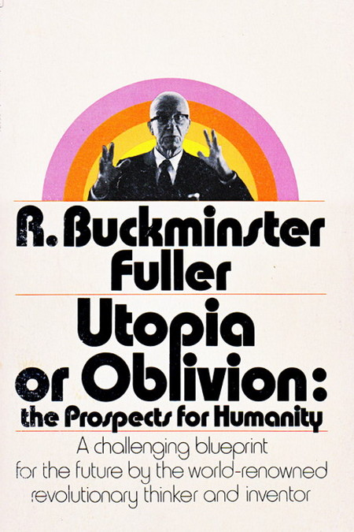
"Abandoned Buran shuttle" - Ralph Mirebs
https://ralphmirebs.livejournal.com/219949.html
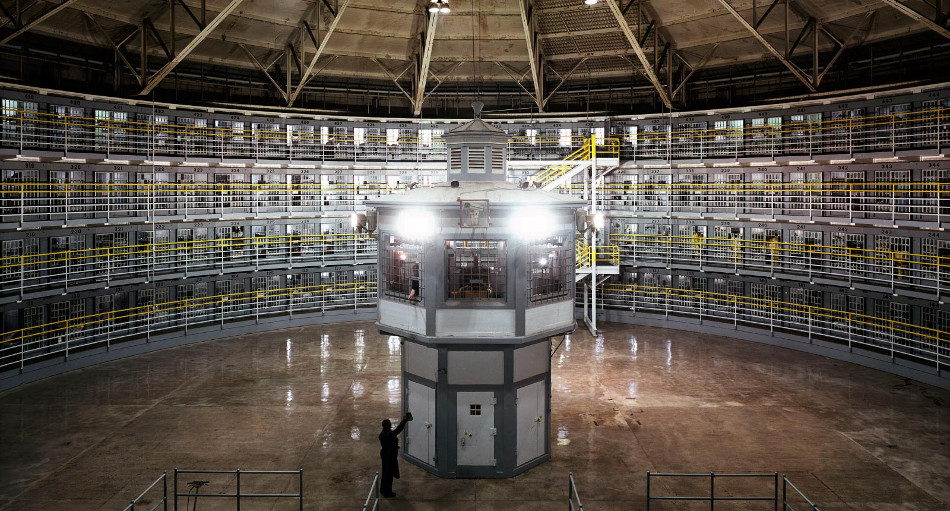
"Stateville Correctional Center" - Doug DuBois & Jim Goldberg
http://www.dougdubois.com/
http://www.magnumphotos.com/jimgoldberg
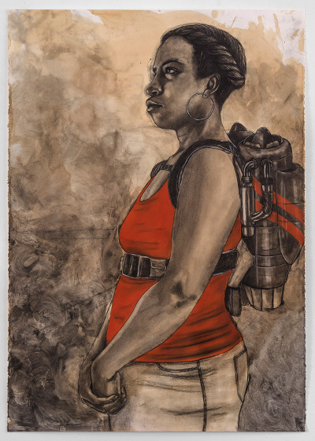
"Altitude determines attitude" - Robert Pruitt
http://robertpruittartist.tumblr.com